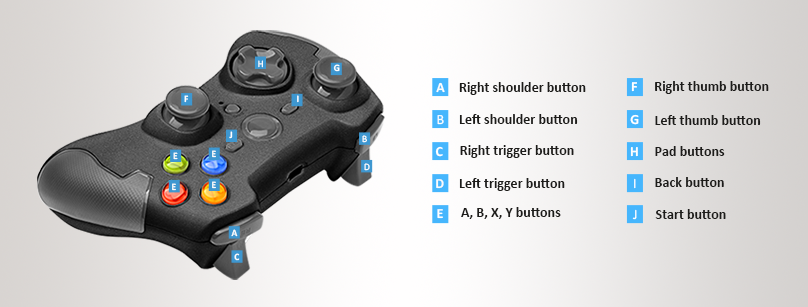

Gamepads
Beginner Programmer
Gamepads, such as the Xbox Elite Wireless Controller and the PS4 DualShock, are popular input devices for consoles and desktop.
Note
Stride is currently optimized for the Xbox Elite gamepad. Other controllers work, but might have unexpected button mappings. Gamepad-specific features like the PS4 DualShock touchpad aren't supported.
Digital and analog buttons
Digital buttons have two states: up and down. The D-pad, Start, Back, Thumbstick (press), A, B, X and Y buttons are digital buttons.
Analog buttons return a value depending on how hard the user presses. The triggers are analog buttons, and return a value between 0 and 1. The thumbsticks are also analog, and return values between -1 and 1 on the X and Y axes.
The Xbox Elite controller buttons have the following names in Stride:

Handle gamepad input
Check that gamepads are connected
Before handling gamepad input:
To check if any gamepads are connected, use InputManager.HasGamePad.
To check how many gamepads are connected, use InputManager.GamePadCount.
To check if the current device has been disconnected, use the InputManager.DeviceRemoved event.
To check if a device has been connected, use the InputManager.DeviceAdded event.
Digital buttons
To query the states and state changes of digital gamepad buttons, on the GamePad object, call:
| Method | Functionality |
|---|---|
| IsButtonDown(IGamePadDevice, GamePadButton) | Checks whether the button is in the down state. |
| IsButtonPressed(IGamePadDevice, GamePadButton) | Checks whether the user has pressed the button since the previous update. |
| IsButtonReleased(IGamePadDevice, GamePadButton) | Checks whether the user has released the button since the previous update. |
Button (GamePadButton) is the gamepad button you want to check.
You can also get the state of digital buttons using GamePadState.Buttons.
Note
The GamePadState.Buttons field is a bitmask that uses binary system. Depending on the bitmask value, you can determine which buttons are up or down.
To get the gamepad state, use IGamePadDevice.State.
Analog buttons
To query values of analog buttons, first get the current state of gamepad using GetGamePadByIndex(index), where index (Integer) is the index of the gamepad you want to check.
Warning
The value returned by IGamePadDevice.State is the state of the gamepad at the current update. You can't reuse this value for the next updates. You have to query it again in every update.
To get trigger and thumbstick positions, use these GamePadState fields:
| Field | Description |
|---|---|
| GamePadState.LeftThumb | Left thumbstick X-axis/Y-axis value in the range [-1.0f, 1.0f] for both axes. |
| GamePadState.RightThumb | Right thumbstick X-axis/Y-axis value in the range [-1.0f, 1.0f] for both axes. |
| GamePadState.LeftTrigger | Left trigger analog control value in the range [0, 1.0f] for a single axes. |
| GamePadState.RightTrigger | Right trigger analog control value in the range [0, 1.0f] for a single axis. |
Thumbsticks move along the X and Y axes. Their positions read as follows:

Triggers move along the X axis. Their positions read as follows:
Vibration
To set the gamepad vibration level, use IGamePadDevice.SetVibration.
Note
Stride currently only supports vibration for Xbox gamepads.
Example code
using Stride.Core.Mathematics;
using Stride.Engine;
public class TestScript : SyncScript
{
public override void Update()
{
//Check if a gamepad is connected
if (Input.HasGamePad)
{
//Get the number of connected gamepads
int gamepadCount = Input.GamePadCount;
// Check each gamepad's status
foreach(var gamepad in Input.GamePads)
{
// Get the analog thumbstick positions
Vector2 speed = gamepad.State.LeftThumb;
Vector2 direction = gamepad.State.RightThumb;
// Get the digital buttons' status
if (gamepad.IsButtonDown(GamePadButton.X))
{
// The action repeats for as long as the user holds the button down.
// This is useful for continuous actions such as firing a machine gun.
}
if (gamepad.IsButtonPressed(GamePadButton.A))
{
// The action is triggered only once, even if the user holds the button down.
// This is useful for one-time actions such as jumping.
}
}
}
}
}